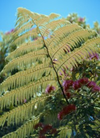
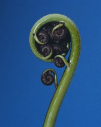
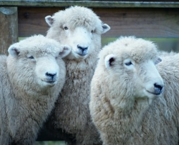

Arts and culture form a lively part of New Zealand life. Traditional Maori arts can be seen throughout the country, while professional theatre and dance companies, orchestras and opera feature in the main centres. New Zealand music is gaining an international reputation, and you’ll find studios of the country’s best artists throughout the country. Filmaking in New Zealand is enjoying a vibrant period.
Arts and Crafts
New Zealand offers many different handmade arts and crafts, including European, Maori and Pacific Island.
Ancient Maori crafts are taonga (precious treasures) to modern Maori. Traditional art heirlooms such as carved rakau (walking sticks), hei taonga pounamu (greenstone or jade pendants) and bone carvings are treated with great respect and care as they are believed to carry the spirit of their original owners.
Souvenir stores, museum shops and specialty outlets sell beautiful carvings, weaving and jewellery incorporating the ancient traditions and art forms of New Zealand's Maori people.
New Zealand also has an abundance of handcrafts made by local artists, including handmade jewellery, wooden and stuffed toys, hand knitted and crafted wool products, pottery and glassware.
Cultural Attractions
The indigenous Maori people of New Zealand have a rich and fascinating culture. A variety of Maori cultural tours and attractions are available throughout the country, and will enable you to experience this unique culture first hand.
Some marae (meeting places) throughout the country welcome visitors. Here you can take part in a powhiri (welcoming ceremony) and enjoy a hangi - a traditional Maori feast cooked in an earth oven.
Cultural performances, including the haka and poi dances also feature.
Galleries
New Zealand art, sculpture and jewellery is receiving increasing worldwide recognition. Many galleries around the country hold exhibitions that feature the works of nationally acclaimed artists, as well as fresh, new talent.
Major public art galleries can be found in the main cities, including Auckland City Art Gallery, Wellington City Gallery, the new Christchurch Art Gallery and the Dunedin Public Art Gallery.
Visitors wishing to buy examples of New Zealand art should seek out dealer galleries in the large cities and most small towns. In some areas it may also be possible to visit the artist’s studio.
Heritage Attractions
Although a relatively young country, New Zealand has many historic buildings and attractions, and a surprisingly large number of museums. You’ll find many heritage attractions in the Northland and Otago regions, as these were some of the earliest areas to be settled by immigrants.
A heritage highlight of the Northland region is the magnificent Treaty grounds and buildings at Waitangi. Containing fine examples of both Maori and Pakeha (European) architecture, this fascinating complex gives the visitor an excellent insight into the Treaty of Waitangi, New Zealand’s founding document.
The capital city, Wellington, contains the former Government Buildings - the largest wooden building in the Southern Hemisphere.
Visitors to the South Island will see many sites and buildings dating back to the goldrush days of the 1860s, while the cities of Christchurch and Dunedin contain fine examples of 19th century stone architecture.
Museums
There are major museums in each of the main cities and frequently very good local museums in many towns. Prominence is given to collections of Maori artefacts, carved buildings and canoes, the history of European settlement, and to New Zealand's natural history and geology.
Performing Arts
Both Polynesian and European cultures are reflected in New Zealand's vibrant performing arts scene. Most professional performances are staged in Auckland, Wellington and Christchurch. The New Zealand Symphony Orchestra and Royal New Zealand Ballet make regular visits to major cities, and some professional theatre performances also tour main centres. Many smaller towns put on excellent non-professional shows.
The three main cities also have local orchestras and are centres for professional theatre and opera, as well as contemporary dance. Exhilarating performances of Maori and Pacific Island song and dance can also be experienced, particularly in Auckland.